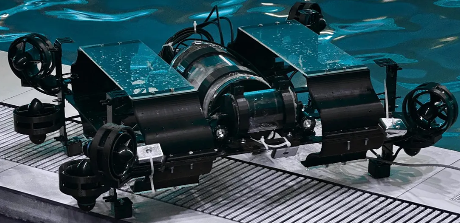
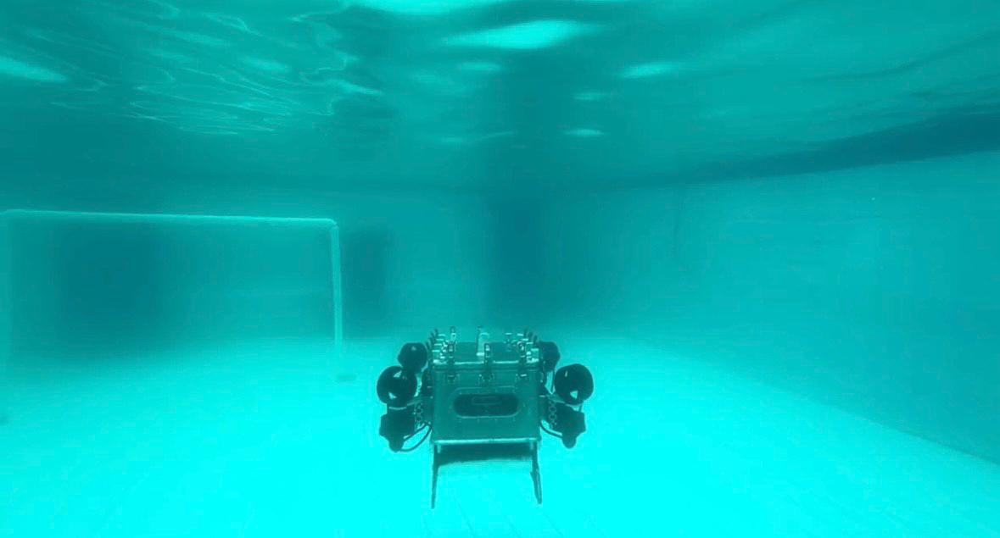
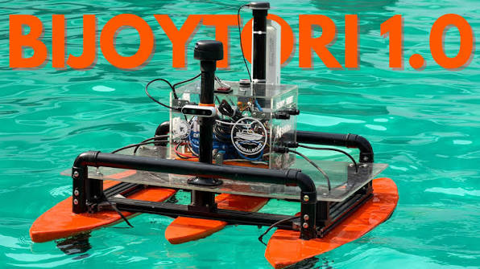
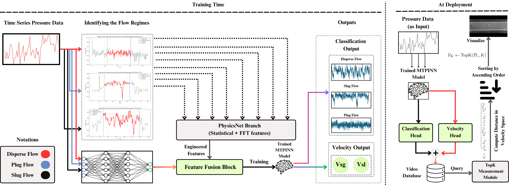
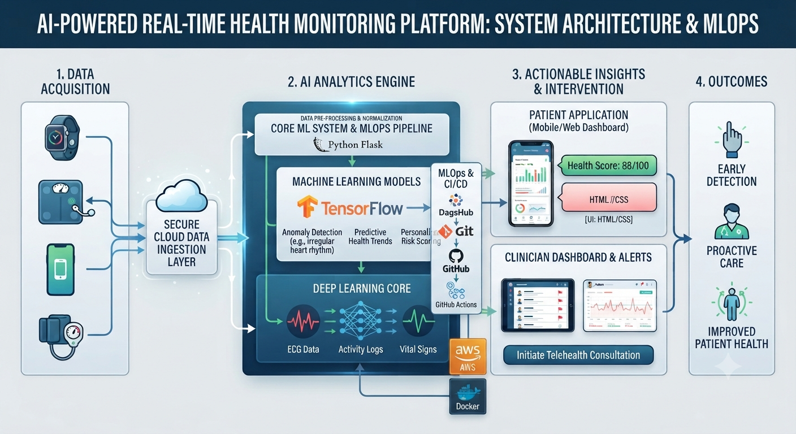
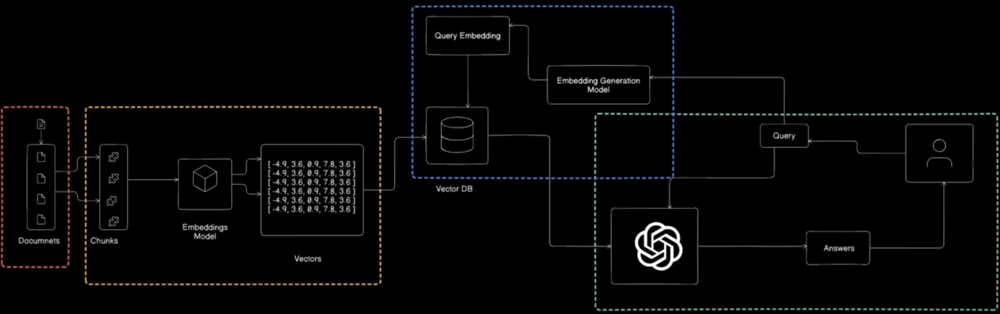
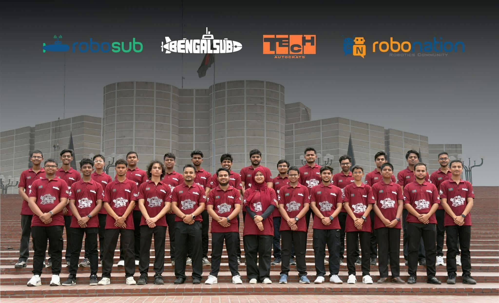
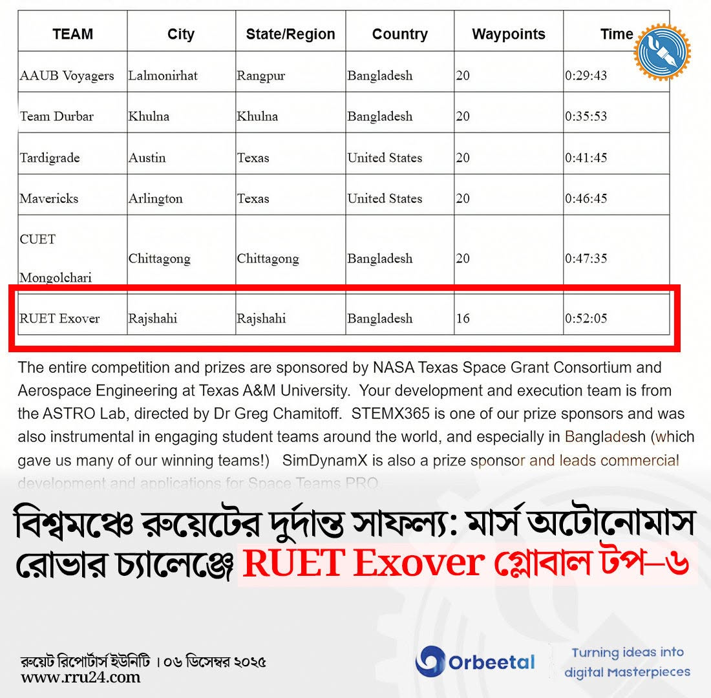
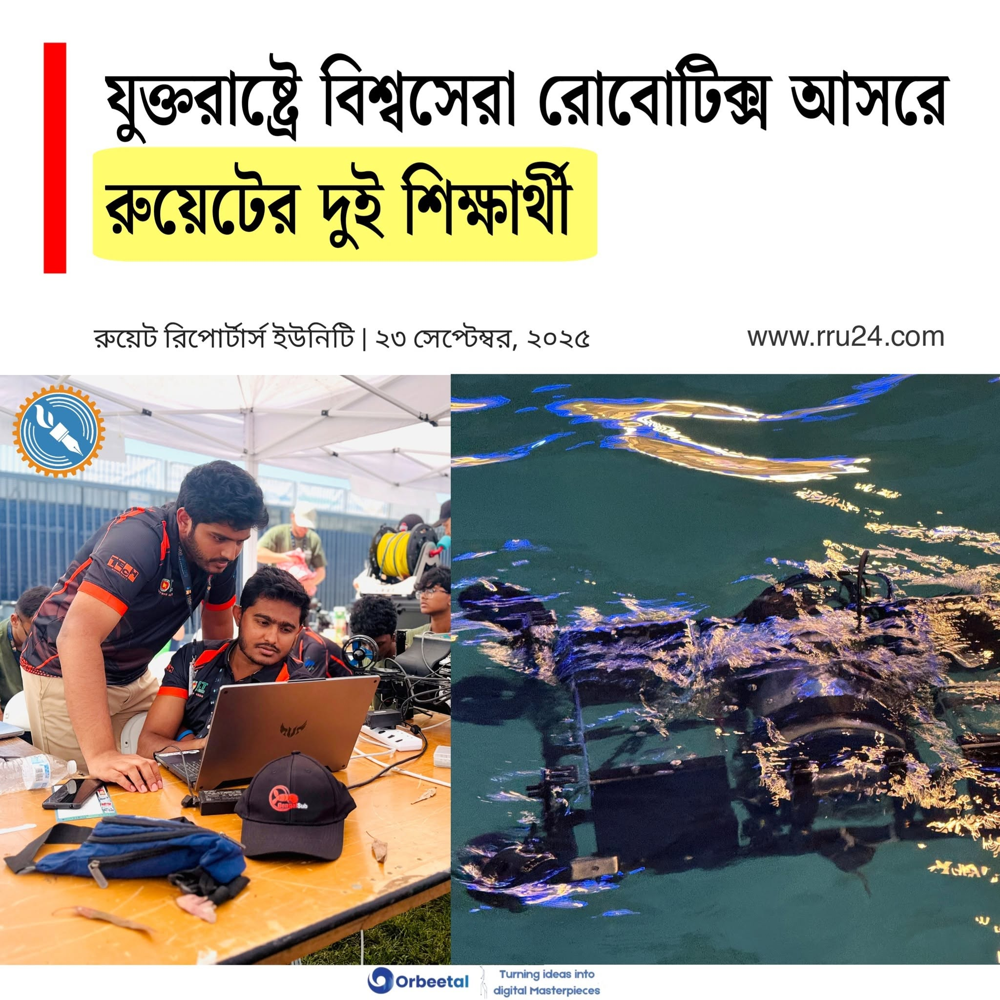

Researcher · Engineer
Khondokar
Radwanur Rahman
My interests lie at the intersection of AI, physics-informed learning, mathematical modeling, privacy, and autonomous robotics.
Domain
Education
MAR 2022 — JUL 2026
B.Sc. in Electrical and Computer Engineering
Rajshahi University of Engineering and Technology (RUET) · Rajshahi, Bangladesh
APR 2018 — JUL 2020
Higher Secondary (General)
Dhaka City College, Dhanmondi, Dhaka.
Experience
-
FEB 2025 — PRESENT
Graduate Research Assistant
Qatar University
Working under Prof. Dr. Amith Abdullah Khandakar to develop multimodal AI pipelines integrating computer vision, time-series sensor, and operational data for industrial anomaly detection and energy forecasting, improving cross-modal prediction reliability by ~8%. Applied physics-informed neural networks (PINNs) and federated learning to 100k+ multimodal sensor samples, contributing to four QNRF-funded research projects and co-authoring four peer-reviewed book chapters.
-
MAY 2025 — JUL 2026
Lead Software Engineer
BengalSub
Led software development for Autonomous Underwater Vehicles Hangor 1.0 and Hangor 2.0 for the international RoboSub competition held in California, USA. Deployed the autonomy stack on Jetson Orin Nano and Raspberry Pi 5, integrating YOLO detection, Depth Anything V2, and vision-based pose estimation. Built the mission-planning framework with Behavior Trees (PyTrees), optimized inference with TensorRT for a 68% latency reduction, and integrated Bar30 pressure sensing and VN-200 IMU for closed-loop depth stabilization.
-
JAN 2026 — MAR 2026
Software Team Mentor
BengalBoat
Mentored the BengalBoat team in developing the autonomous surface vessel BijoyTori 1.0 for an international maritime robotics competition in Florida, USA. Guided the design of a ROS2 Jazzy–based autonomy stack on Raspberry Pi, integrating Intel RealSense D455 RGB-D perception, RPLidar A2 obstacle detection, and EKF-based sensor fusion for robust localization. Oversaw the implementation of autonomous navigation using global and local planners with dynamic costmaps, and supervised system validation in Gazebo Classic before real-world deployment.
-
SEP 2025 — FEB 2026
AI Trainer
Outlier AI
Worked as an AI Trainer at Outlier AI, contributing to the Kepler RLHF and Green Wizard projects. Evaluated and improved large language models through Reinforcement Learning from Human Feedback (RLHF), prompt engineering, response ranking, and factuality assessment. Produced high-quality human annotations across complex reasoning and coding tasks, helping enhance model alignment, instruction following, and overall response quality while adhering to rigorous quality and safety standards.
Research & Publications
Featured Projects

Hangor1.0 AUV
Hangor integrates YOLOv8 perception, acoustic localization, ROS-based autonomy, and Behavior Tree mission planning on Jetson Orin Nano for robust autonomous underwater operations.
GitHub ↗
Hangor2.0 AUV
Architecting an embedded AI autonomy stack with YOLOv11, Depth Anything V2, Behavior Trees, TensorRT, and sensor fusion for real-time underwater navigation in Jetson Orin Nano.
GitHub ↗
BijoyTori1.0 ASV
Architected a ROS2 Jazzy autonomy pipeline on Raspberry Pi, integrating RGB-D perception, LiDAR obstacle detection, EKF sensor fusion, and autonomous navigation, validated in Gazebo before hardware deployment.
GitHub ↗
Tracer
Built and deployed an MTPINN at HBKU, Qatar, combining physics-informed learning and multimodal digital twin validation for real-time flow regime classification and velocity estimation, achieving 96.12% ± 2.3% accuracy.
GitHub ↗
AgroVision
Developed an end-to-end deep learning application for plant disease classification using TensorFlow, Python, and Flask, with Docker, AWS, DagsHub (MLOps), GitHub Actions, and HTML/CSS for automated deployment and web-based inference.
GitHub ↗
Medic
Medical Assistant Chatbot using a full-stack RAG (Retrieval-Augmented Generation) pipeline! This project combines powerful tools like LangChain, Pinecone, Google Embeddings, and Groq’s LLaMA 3 to create an intelligent, domain-specific chatbot that answers medical queries using real PDF documents.
GitHub ↗Featured Writing
Public Relations & Media

বিশ্বমঞ্চে রোবোসাব প্রতিযোগিতায় সেমিফাইনালে বাংলাদেশের ‘বেঙ্গলসাব’
আন্তর্জাতিক অঙ্গনে আন্ডারওয়াটার রোবোটিক্সের অন্যতম মর্যাদাপূর্ণ প্রতিযোগিতা ‘রোবোসাব ২০২৬’-এ এক অবিস্মরণীয় ইতিহাস সৃষ্টি করেছে বাংলাদেশের তরুণ প্রকৌশলীদের দল ‘বেঙ্গলসাব’। প্রথম কোনো মাল্টিডিসিপ্লিনারি দল হিসেবে ২০২৫ সালে বিশ্বমঞ্চে ডেবিউ করার পর এবার আরও এক ধাপ এগিয়ে প্রথম বাংলাদেশি দল হিসেবে সরাসরি সেমি ফাইনালে ওঠার গৌরব অর্জন করে।
Read coverage
বিশ্বমঞ্চে রুয়েটের দুর্দান্ত সাফল্য: মার্স অটোনোমাস রোভার চ্যালেঞ্জে RUET Exover গ্লোবাল টপ–৬
'মার্স অটোনোমাস রোভার র্যালি ডিজাইন চ্যালেঞ্জ ২০২৫' এ আন্তর্জাতিক অঙ্গনে দারুণ সাফল্য অর্জন করেছে রাজশাহী প্রকৌশল ও প্রযুক্তি বিশ্ববিদ্যালয়ের (রুয়েট) রোবোটিক্স টিম “RUET Exover”। বিশ্বব্যাপী স্বনামধন্য বিশ্ববিদ্যালয়গুলোর অংশগ্রহণে আয়োজিত এই প্রতিযোগিতায় টিমটি ৬ষ্ঠ স্থান অর্জন করে দেশের জন্য গৌরব বয়ে এনেছে। প্রতিযোগিতাটি আয়োজন করে যুক্তরাষ্ট্রের NASA Texas Space Grant Consortium এবং Texas A&M University Aerospace Engineering Department, যেখানে প্রতিযোগীদের মঙ্গলগ্রহের Kaiser Crater এর প্রতিকূল ভূপ্রকৃতিতে সম্পূর্ণ স্বয়ংক্রিয় নেভিগেশন সক্ষম রোভার অ্যালগরিদম ডিজাইন করার চ্যালেঞ্জ দেওয়া হয়।
Read coverage
যুক্তরাষ্ট্রে বিশ্বসেরা রোবোটিক্স আসরে রুয়েটের দুই শিক্ষার্থী
যুক্তরাষ্ট্রে বিশ্বসেরা রোবোটিক্স আসরে রুয়েটের দুই শিক্ষার্থী যুক্তরাষ্ট্রের ক্যালিফোর্নিয়ার আর্ভিনে অনুষ্ঠিত বিশ্বখ্যাত অটোনোমাস আন্ডারওয়াটার ভেহিকল (AUV) প্রতিযোগিতা “RoboSub 2025”-এ প্রথমবারের মতো অংশ নিয়েছেন রাজশাহী প্রকৌশল ও প্রযুক্তি বিশ্ববিদ্যালয়ের (রুয়েট) দুই শিক্ষার্থী। আন্তর্জাতিক অঙ্গনে রুয়েটের এই অংশগ্রহণকে বাংলাদেশের রোবোটিক্স গবেষণা ও উদ্ভাবনের ক্ষেত্রে এক নতুন দিগন্ত হিসেবে দেখা হচ্ছে।
Read coverageRecognitions
-
RoboSub 2026, California, USA
2026Semifinalist and ranked 18th out of 60 teams in the Design Documentation category.
-
RoboBoat 2026, Florida, USA
2026Represented Bangladesh at the international RoboBoat competition.
-
Mars Autonomous Rover Rally, Texas, USA
2026Led Team RUET Exover and achieved 6th place globally, and won $500 in the NASA Texas Space Grant competition.
-
RoboSub 2025, California, USA
2025Represented Bangladesh at the international RoboSub competition.
-
Global AI Hackathon (Kaggle)
2025Ranked 15th out of 355 teams worldwide.
-
Synthetic-to-Real Object Detection Challenge (Kaggle)
2025Ranked 12th out of 103 teams globally.
-
5th International KIBO-RPC
2025Ranked 7th out of 135 teams in the national round.
-
National Hackathon, East West University
2025Finalist.
-
University Innovation Hub Program-Cohort 1
2025Our team MostQuitt secured 2nd place and received a pre-seed fund of BDT 60,000.
-
RUET Technical Scholarship
2022–2024Awarded the Technical Scholarship for three consecutive years (2022, 2023, and 2024).
-
University Physics Olympiad
2023Recognized as an Accomplished Competitor.
-
Smart Rajshahi Innovation Challenge
2023Our team Best_Trio secured 3rd place among 100+ teams nationwide.